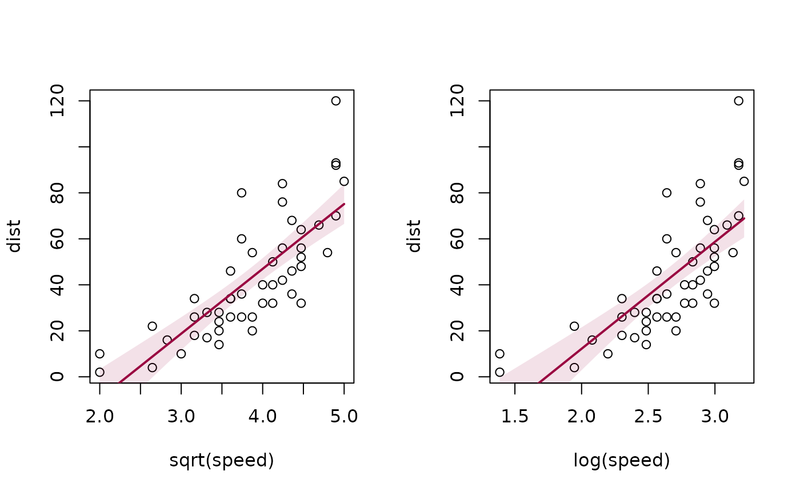
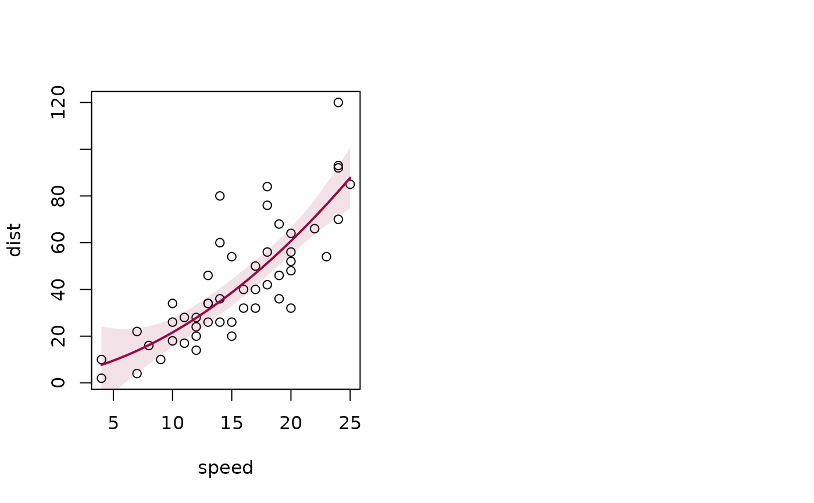

lines.lm.RdAdd a linear regression line to an existing plot. The function first calculates the prediction of a lm object for a reasonable amount of points, then adds the line to the plot and inserts a polygon with the confidence and, if required, the prediction intervals.
In addition to abline the function will also display polynomial models.
linear model object as result from lm(y~x).
linecolor of the line. Default is the color returned by Pal()[1].
line width of the line.
line type of the line.
character indicating the type of plotting; actually any of the types as in plot.default. Type of plot, defaults to "l".
number of points used for plotting the fit.
confidence level for the confidence interval. Set this to NA, if no confidence band should be plotted.
Default is 0.95.
list of arguments for the confidence band, such as color or border (see DrawBand).
confidence level for the prediction interval. Set this to NA, if no prediction band should be plotted.
Default is 0.95.
list of arguments for the prediction band, such as color or border (see DrawBand).
a numeric vector c(from, to), if the x limits can't be defined based on available data, xpred can be used to provide the range where the line and especially the confidence intervals should be plotted.
further arguments are not used specifically.
It's sometimes illuminating to plot a regression line with its prediction, resp. confidence intervals over an existing scatterplot. This only makes sense, if just a simple linear model explaining a target variable by (a function of) one single predictor is to be visualized.
nothing
opar <- par(mfrow=c(1,2))
plot(hp ~ wt, mtcars)
lines(lm(hp ~ wt, mtcars), col="steelblue")
# add the prediction intervals in different color
plot(hp ~ wt, mtcars)
r.lm <- lm(hp ~ wt, mtcars)
lines(r.lm, col="red", pred.level=0.95, args.pband=list(col=SetAlpha("grey",0.3)) )
# works with transformations too
plot(dist ~ sqrt(speed), cars)
lines(lm(dist ~ sqrt(speed), cars), col=DescTools::hred)
plot(dist ~ log(speed), cars)
lines(lm(dist ~ log(speed), cars), col=DescTools::hred)

# and with more specific variables based on only one predictor
plot(dist ~ speed, cars)
lines(lm(dist ~ poly(speed, degree=2), cars), col=DescTools::hred)
par(opar)
